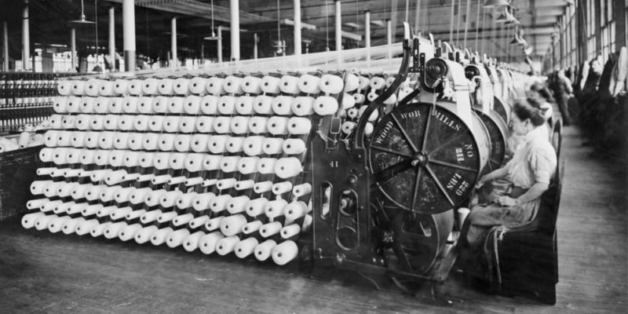
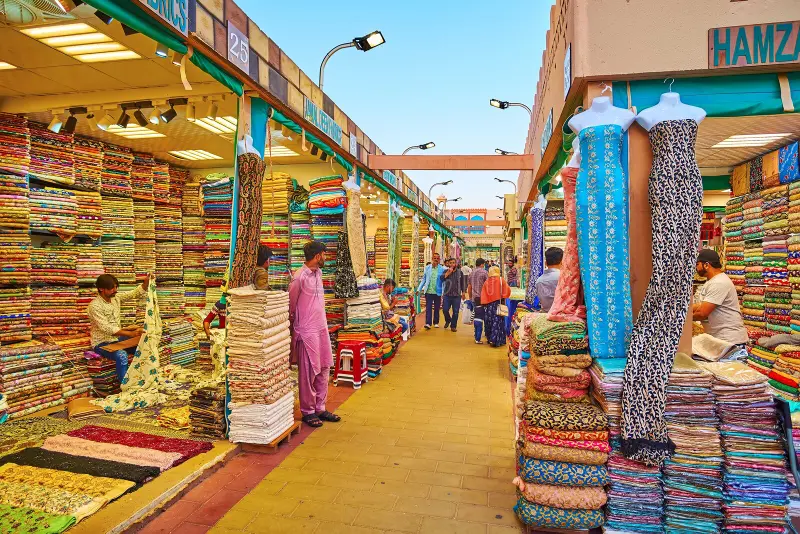
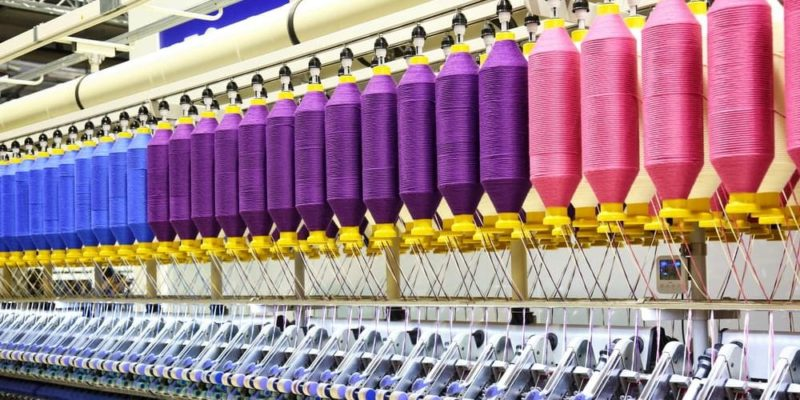
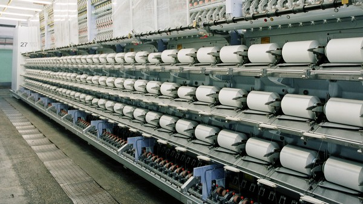
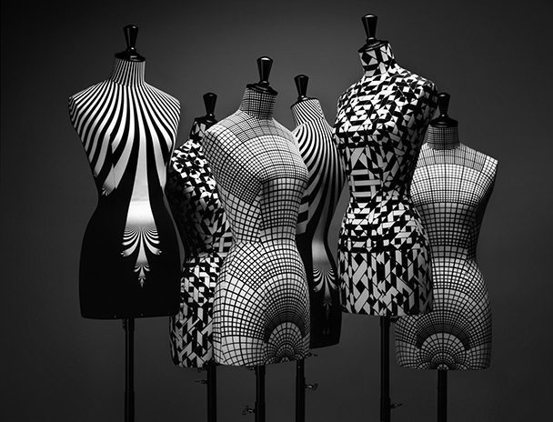

Benvinguts a Tèxtils Montblanc
Som una empresa familiar amb més de 35 anys d’experiència en el sector tèxtil...
Els nostres Orígens
La història de Tèxtils Montblanc comença en un petit taller familiar...
Mirant cap al Futur
Amb la transformació digital 4.0, estem adaptant la nostra producció...
Innovació en Materials
Investigant nous teixits tècnics, resistents i sostenibles...
Compromís amb la Moda i el Medi Ambient
Creiem en una moda responsable...
